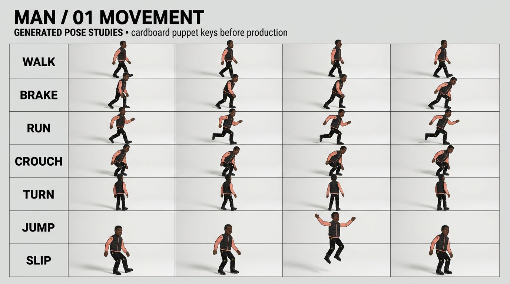

Comparing the four pillars of cardboard puppet motion:
(1) Bolas 3D Ground Truth Skeleton under camera triple $(yaw=-22^\circ, elev=12^\circ)$,
(2) Rigid Puppet Rig Breakdown exhibiting joint disarticulation, limb overlap, or inverted boots,
(3) In Situ Generated Keyframe synthesized under the authentic camera triple, and
(4) Disassembled Part Library with bounded axial stretch scaling ($s_y = L_{\text{meas}}/L_{\text{card}}$) and zero-overlap joint sockets.
PRODUCTION CONTACT SHEETSMAN / 01 MOVEMENT · Complete Pose Studies

Reference Conditioning: Formulated using the male lead reference (Black man, shades, black jacket with salmon-pink piping, corrugated fluting, brass brads).Camera yaw -22°, elevation 12° · Bolas Ground Truth Anchored